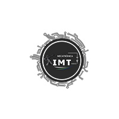
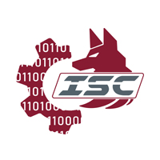
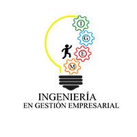
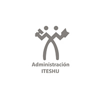
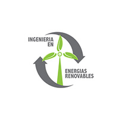
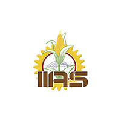
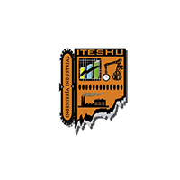
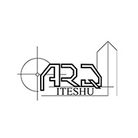
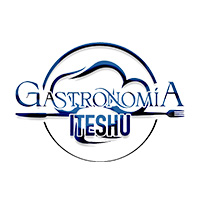
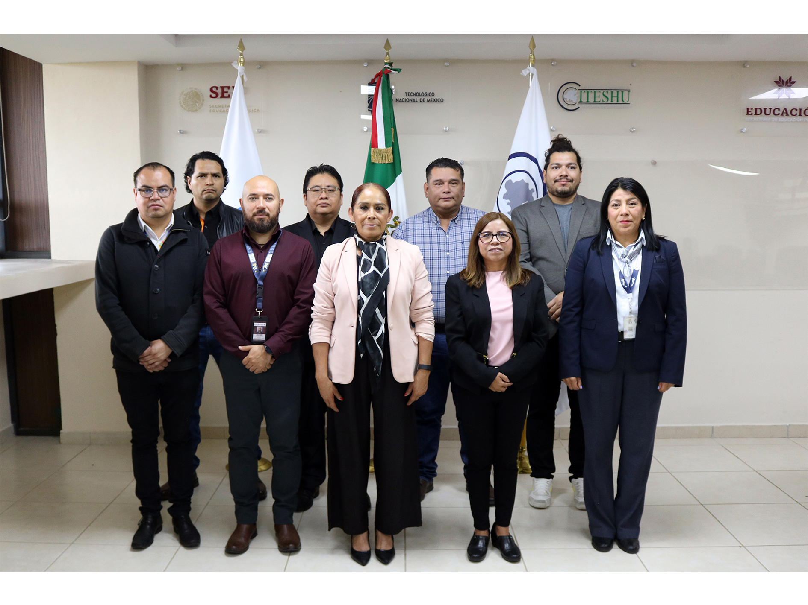

Prototipo web · Identidad ITESHU · Experiencia UAQ
El motor tecnológico y sustentable de la región
9 programas de ingeniería, arquitectura y gastronomía ·
nueva Maestría en Desarrollo Regional e Innovación Tecnológica ·
desarrollo sustentable y transferencia tecnológica.
9 programas
2026 nueva maestría
3+ acreditaciones CACEI
Oferta educativa · 1/3
Ingenierías
Siete programas con laboratorios, vinculación empresarial y residencias profesionales reales.
Demandada

Mecatrónica
Automatización, robótica y sistemas ciberfísicos.
Demandada

Sistemas Computacionales
Software, redes, datos e inteligencia artificial.
Virtual

Gestión Empresarial
La ingeniería de los negocios y el emprendimiento.

Administración
Gestión estratégica con visión de negocio.
Sello regional

Energías Renovables
Solar, eólica y sustentabilidad energética.
Sello regional

Innovación Agrícola
Tecnología aplicada al campo con productores.

Industrial
Optimización de procesos, calidad y logística.
+
Modalidades
Mixta · Fin de semana · Espacio académico Tecozautla
Oferta educativa · 2/3
Arquitectura y Gastronomía
Las áreas creativas donde la identidad se encuentra con el emprendimiento.

Arquitectura
Diseño del hábitat humano: espacios sostenibles para la comunidad, con visión de desarrollo territorial.

Gastronomía
La cocina como industria, identidad y emprendimiento: del aula al restaurante y al producto regional.
Oferta educativa · 3/3 · Nuevo posgrado
Maestría en Desarrollo Regional e Innovación Tecnológica
✓LGAC 1 · Desarrollo Regional Sostenible: agricultura sostenible, soberanía alimentaria y proyectos con impacto territorial.
✓LGAC 2 · Innovación Tecnológica e Industria 4.0: energías renovables, inteligencia artificial y emprendimiento tecnológico.
✓Dirigida a egresados de ingeniería, arquitectura, administración, economía y ciencias ambientales.
También contamos con la Maestría en Ingeniería Mecatrónica (posgrado profesionalizante).

Convocatoria abierta · 2026
Diagnóstico · 1/2
La web actual: problemas concretos
iteshu.edu.mx visto con ojos de aspirante.
✗Portada llena de licitaciones — el aspirante no sabe en 5 segundos qué se estudia.
✗Oferta oculta en un menú desplegable de 3 niveles.
✗Textos extensos cortados por CSS en lugar de resumidos.
✗Carrusel mezclado sin jerarquía ni llamado a la acción.
✗No existe "Quiero ser aspirante" — no hay ruta de conversión.
✗Sitio pesado y móvil deficiente: Bootstrap 3, sliders y SDK de Facebook.
Diagnóstico · 2/2 · Estilo UAQ + identidad ITESHU
La propuesta resuelve todo
Mismos colores, mismo logo y mismas fotografías. Nueva claridad.
✓Hero con foto real + CTA único "Quiero ser aspirante".
✓Oferta educativa en grid de portada con filtros por área.
✓Cards con extractos cortos y whitespace estilo UAQ.
✓Sección especial de la nueva Maestría + convocatoria.
✓Admisión en 4 pasos y CTAs persistentes.
✓Un solo HTML ligero, mobile-first, accesible y con animaciones.
¿Listo para ser parte del ITESHU? Siguiente paso: tu ficha de admisión en fichas.iteshu.edu.mx
Instituto Tecnológico Superior de Huichapan
Prototipo web · estilo UAQ + identidad ITESHU